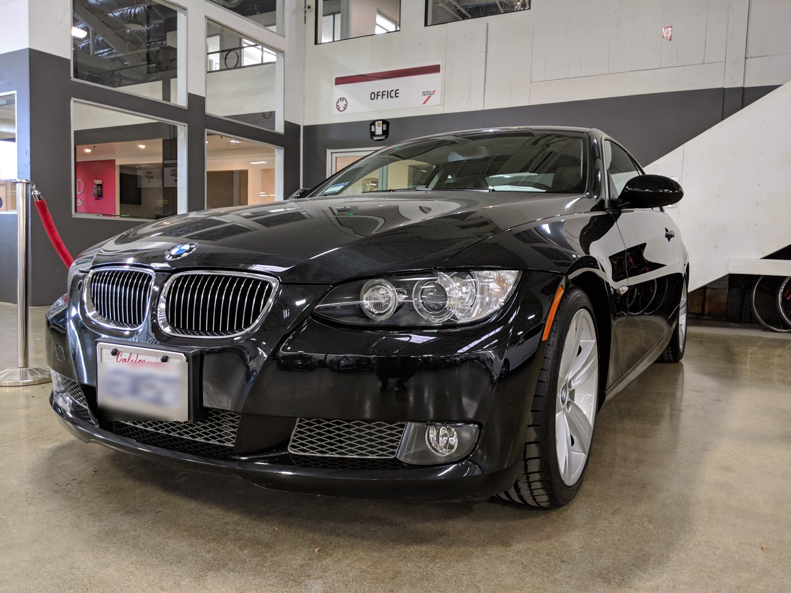
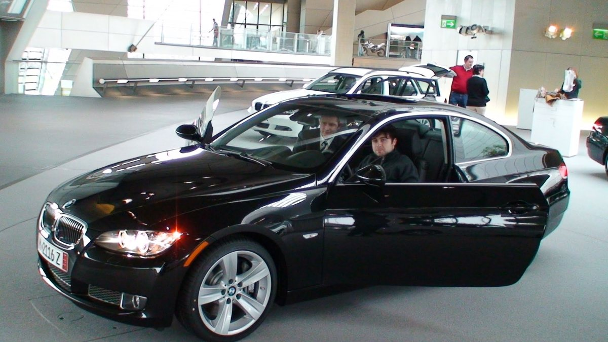
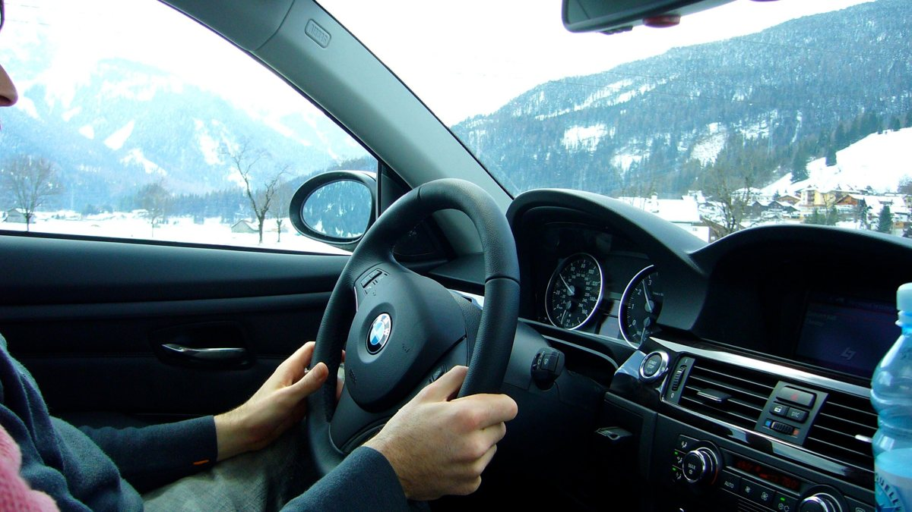
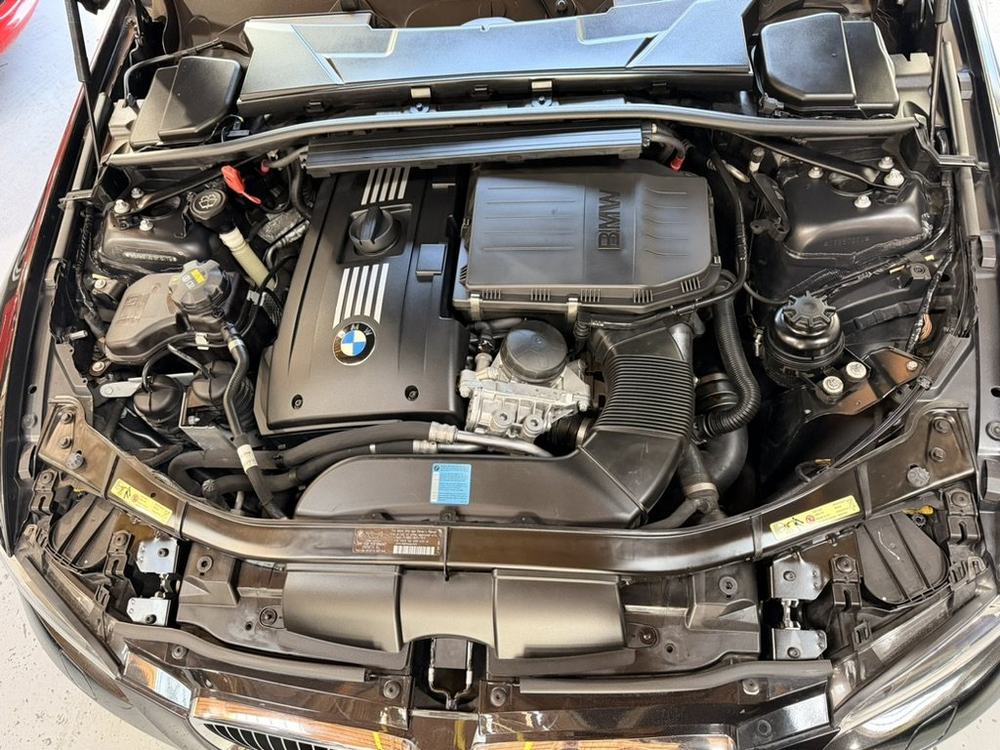
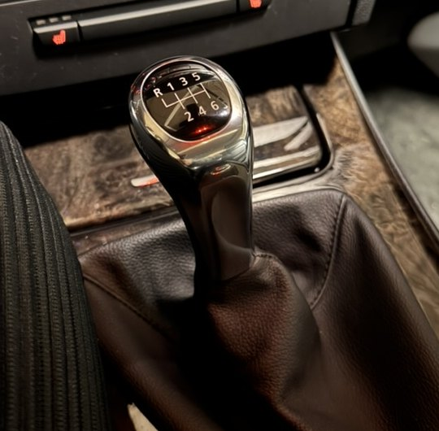
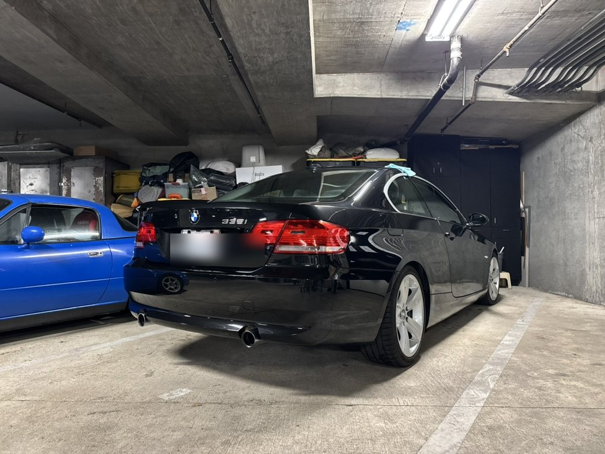

15+ years in strategic partnerships, corporate development, and OEM-integration deal-making — building partner ecosystems from zero, negotiating first-of-their-kind technical agreements, and scaling platforms through acquisition. Now focused on autonomous systems and physical AI.
I build and close the partnerships that turn ambitious technology into shipped, revenue-generating products. As cofounder & COO of Pulselocker, I grew a partner ecosystem from 0 to 250+, negotiated the OEM and ISV integrations with Pioneer DJ (now AlphaTheta), Serato and Virtual DJ that embedded our service into their DJ hardware and software, structured the revenue-share economics behind them, scaled from three markets to every EEA country, each with its own licensing regime, and led the company through its acquisition by Beatport.
Since then I've closed $8M+ in commercial contracts in five months across multiple jurisdictions at Utopia Music — negotiating with suppliers, OEMs and content owners — and advised AI and technology startups on partnership strategy and go-to-market. My foundation is commercial: sourcing, structuring, negotiating and owning complex multi-party agreements, then holding the cross-functional execution that makes them real.
I pair that with the technical fluency to scope integrations with engineering, the modeling rigor to present to boards and executives, and an IP-law grounding that makes me fast and precise on contractual and licensing structure.
A commercial career built on bringing new technology to market through partners — structuring the agreement, then owning the relationship.
Built a subscription streaming platform and the entire partner ecosystem beneath it — from first deal to acquisition.
Brought in to accelerate commercial dealflow during a period of aggressive global expansion.
Advising AI and technology companies on partnership structuring and go-to-market.
Early grounding in distribution deals, licensing structure and enterprise sales.
The hardest part of commercializing autonomous technology isn't only the AI — it's structuring the OEM and strategic partnerships that put it into real fleets and vehicles. That's the work I'm built for.
My career has been a repeated pattern: take a genuinely new technology, and build the partnership architecture that gets it adopted — OEM integrations, revenue-share economics, first-of-their-kind agreements, and the cross-functional execution to launch them. The domain has been music and media; the muscle is partnership and deal-making, and it transfers directly to automotive and autonomy.
And I'm not arriving at automotive cold. I grew up in Pittsburgh, where much of the self-driving industry got its start, and I'm a lifelong car enthusiast who wrenches on my own build, obsesses over drivetrain engineering, and drives regularly at rally events (more below). I'm clear-eyed that automotive OEM relationships have their own depth, and I'd come in to learn the sector fast while contributing immediately on what travels: negotiation, incentive design, commercial modeling, and the discipline of being the trusted business interface in high-stakes, ambiguous moments. Waabi's approach to Physical AI is exactly the kind of category-defining technology I want to help bring to market.
The automotive pull isn't a career convenience; it's a genuine obsession. I spend my free time tuning, wrenching, and driving — and reading far too much about drivetrain engineering. For a company putting autonomy onto real vehicles, that enthusiasm is the part of the job I'd never have to fake.

2008 BMW E92 335i · N54 · 6-speed manual · still mine, 18 years on



I specced this car to order and collected it in Munich through BMW's European Delivery program in 2008 — and have done my own tuning and mechanical work on the N54 twin-turbo ever since. I know it from the inside out.

A 6-speed manual I drive for the connection to the machine — a regular at rally driving events and California canyon runs, from the backroads of Mendocino County on. Vehicle dynamics I feel, not just read.

A deep, ongoing fascination with LSD and differential engineering across performance vehicles — how torque actually reaches the road. The kind of curiosity that makes complex hardware partnerships click.
Bringing autonomy to the road is, to me, the single most interesting partnership problem in technology right now — where everything I do professionally meets everything I care about personally.
Open to Director and VP roles in strategic partnerships, OEM and corporate development — in autonomy, AI and frontier technology.